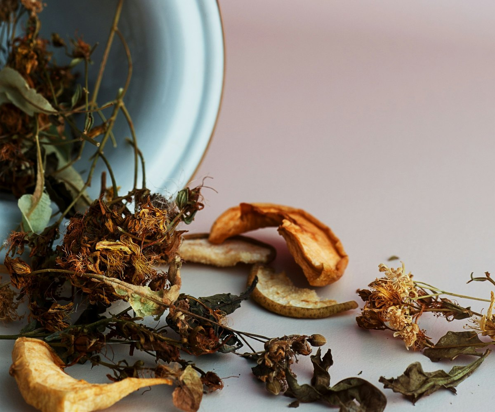

Ein Kräuterlikör ist im Kern eine einfache Sache: ein Destillat, ausgesuchte Kräuter und Wasser. Alles Weitere entscheidet sich in der Auswahl und im Verhältnis — und genau das steht im überlieferten Hausrezept.
Was einen Kräuterlikör ausmacht
Kräuterliköre gehören zu den ältesten Spirituosen überhaupt. Ihr Ursprung liegt weniger im Genuss als in der Heilkunde: Kräuter geben ihre Aromen und Bitterstoffe an Alkohol besser ab als an Wasser. Was als Arznei begann, wurde zum Digestif — zu dem Schluck, der nach dem Essen für Behagen sorgt.
Diese Herkunft erklärt, warum ein guter Kräuterlikör nicht einfach süß sein darf. Er braucht die würzige, leicht herbe Seite. Sonst fehlt ihm das, wofür man ihn trinkt.
Erstens — Ausgesuchte Kräuter
Die Kräuter geben jedem der beiden Liköre seine charaktervolle, unverwechselbare Note. Sie sind auch der Grund für die Bekömmlichkeit, die man einem Amelner nachsagt — jene Eigenschaft, die einen Verdauungsschluck von einem bloßen Schnaps unterscheidet.
Welche Kräuter in welchem Verhältnis: Das ist der Teil des Hausrezepts, der im Haus bleibt.
Zweitens — Weizenfeindestillat
Der Alkohol entsteht aus speziellem Brennereiweizen. Nicht aus irgendeinem Neutralalkohol, den man zukauft — für die Qualität der Grundlage bürgen wir.
Weizen ist eine bewusste Wahl. Er bringt einen weichen, leicht süßlichen Grundton mit, der sich zurücknimmt, statt sich vorzudrängen. Genau das braucht ein Kräuterlikör: eine Grundlage, die den Kräutern die Bühne überlässt.
Drittens — Reines Wasser
Wasser ist die Zutat, über die niemand spricht — dabei macht sie mengenmäßig den größten Teil aus. Es bringt den Likör auf Trinkstärke und entscheidet mit darüber, ob er weich oder kantig schmeckt.
Was nicht hineingehört
Genauso wichtig wie die Zutatenliste ist, was nicht darauf steht. Keine künstlichen Aromen als Abkürzung, keine Farbstoffe, um nachzuhelfen, kein wechselndes Rezept, weil sich Geschmäcker angeblich ändern.
Die Farbe des Treffers kommt von den Kräutern. Die Milde des Tropfens kommt aus dem Verhältnis. Beides kommt aus dem Rezept von 1901.
Auf dem Etikett
„Original“ · „Kräuter-Likör“ · „Deutsches Erzeugnis“ — und oben die Weizengarbe im Kelch, das überlieferte Zeichen des Hauses.

Nichts blieb übrig
In einer Bauernbrennerei war das Brennen Teil eines Kreislaufs: Aus der Schlempe, dem Rückstand, wurde das Vieh gefüttert.
Die Rezeptur auf einen Blick
Ausgesuchte Kräuter
Geben Charakter, Würze und die Bekömmlichkeit, für die ein Amelner steht.
Weizenfeindestillat
Aus speziellem Brennereiweizen. Weich im Grundton, damit die Kräuter wirken können.
Reines Wasser
Bringt auf Trinkstärke und entscheidet über die Weichheit im Mund.
Mehr steht nicht drin. Seit 1901.